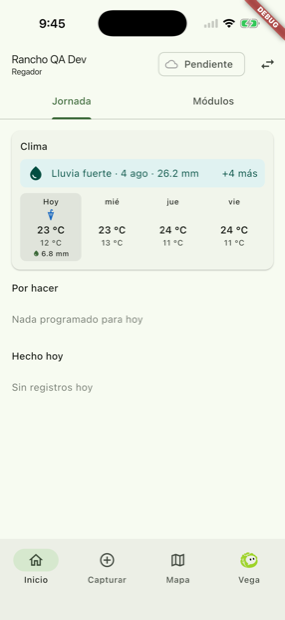
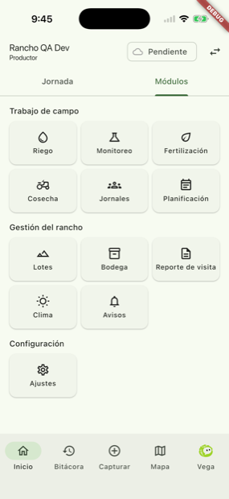

Irrigación · Software · Irapuato, Gto.
Ingeniería en irrigación y software de campo.
Estudio en el Departamento de Irrigación de la Universidad Autónoma Chapingo. Programo la física del agua (FAO-56) y las aplicaciones que la llevan a parcelas sin señal.
Trabajo
-
01
RanchUP en producción
Sistema para ranchos agrícolas y ganaderos. Bitácoras, inventarios y parcelas se capturan en el teléfono sin conexión, y se sincronizan solas cuando vuelve la cobertura.
Flutter · PowerSync · Supabase · FastAPI · GIS offline


-
02
riego-calc código abierto
Calcula cuánta agua necesita un cultivo en México: Penman-Monteith, psicrometría corregida por altura y coeficientes de cultivo locales.
JavaScript · FAO-56 · Agrometeorología
-
03
Topografía CARmorelia demo
Levantamiento con estación total y GPS diferencial publicado como web: nube de puntos 3D del relieve e inventario forestal georreferenciado.
Potree · Leaflet · R · GPS diferencial
-
04
FX Lab tutorial
Guía de estadística con la calculadora Casio fx-991EX, pensada para usarse en iPad durante clase.
Cómo trabajo
-
Sin señal, la app sigue funcionando
En el campo mexicano la cobertura es la excepción. Todo se captura desconectado y se concilia después.
-
Primero la física
1 mm de error en la lámina son 10,000 litros por hectárea. Uso el modelo completo, no atajos.
-
Del levantamiento a la web
Los datos de campo terminan en mapas y visores que cualquiera puede abrir para decidir, no en archivos CAD.
Contacto
GitHub @reliasdomi → Correo Chapingo →
- Nombre
- RUBEN ELIAS DOMINGUEZ
- RFC
- EIDR060813SX0
- Domicilio
- AV DE LAS AGUILAS 420 INT 15, COL. SAN MIGUELITO, IRAPUATO, GUANAJUATO, C.P. 36557, MÉXICO
- Teléfono
- +52 443 895 0964
- Correo
- relias@reliasdomi.com